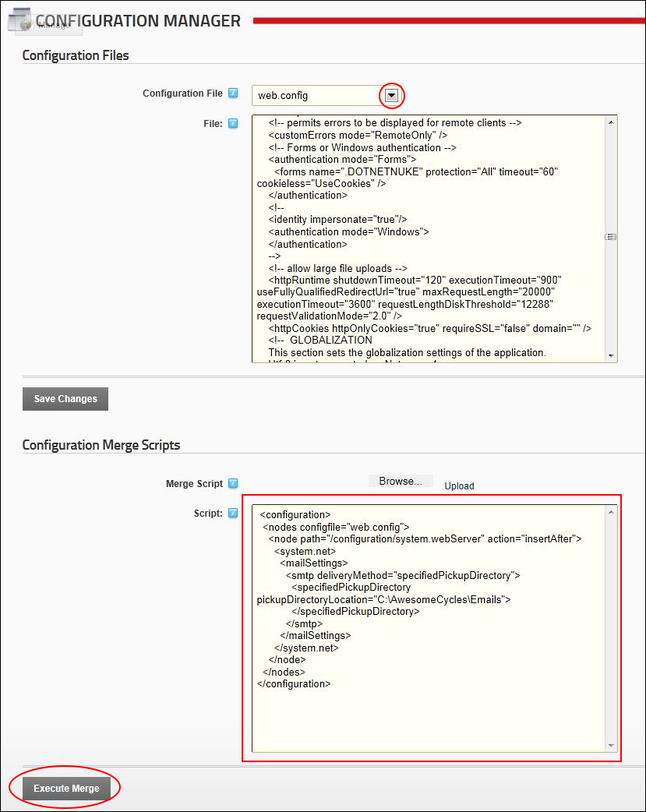

How to send emails with no SMTP server set up using the Configuration Manager. This setting places the system messages as file in the location specified rather than sending them as email. The file name will be similar to 674a7938-a51f-48c6-b8fc-46dd25446f86.eml.
<configuration>
<nodesconfigfile="web.config">
<nodepath="/configuration/system.webServer"action="insertAfter">
<system.net>
<mailSettings>
<smtpdeliveryMethod="specifiedPickupDirectory">
<specifiedPickupDirectorypickupDirectoryLocation="C:\MyFolder\Sites\0"/>
specifiedPickupDirectory>smtp>mailSettings>system.net>node>nodes>configuration>